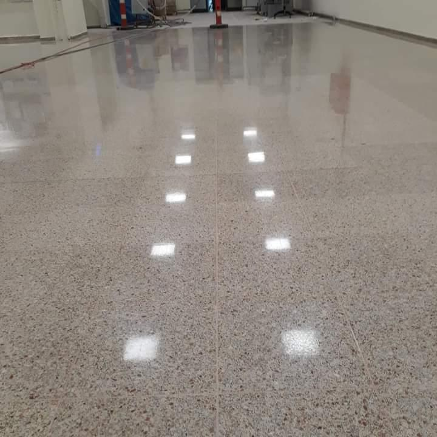
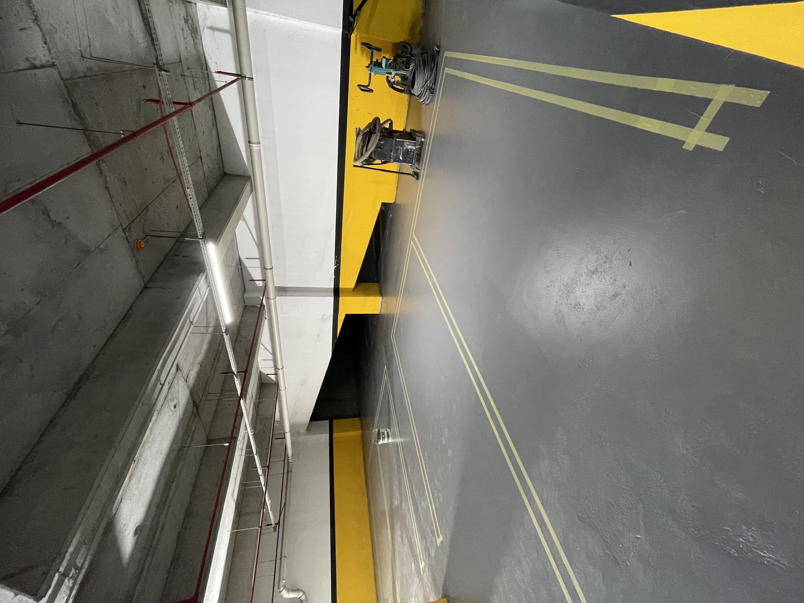
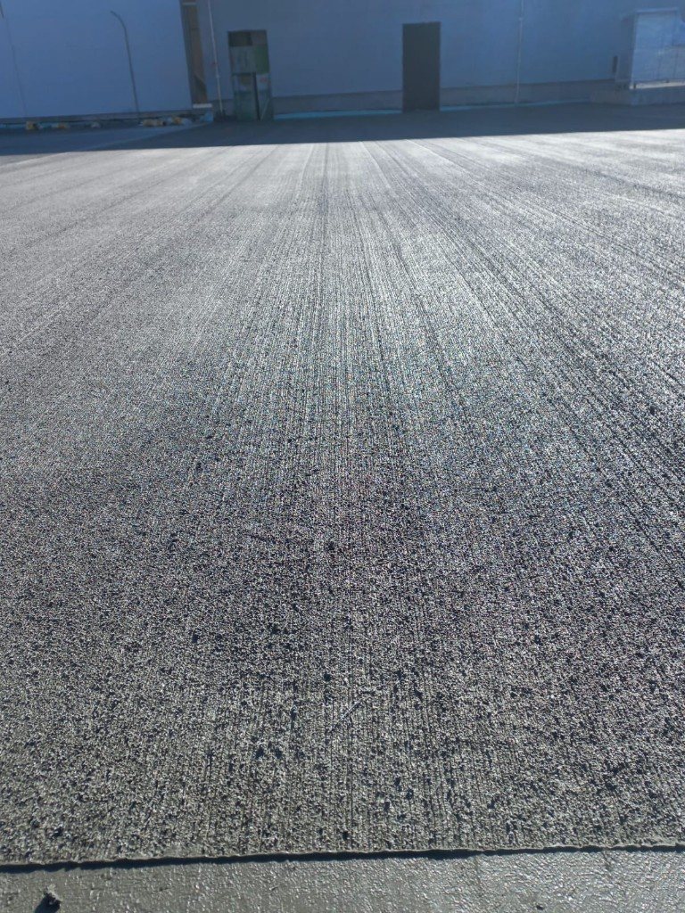
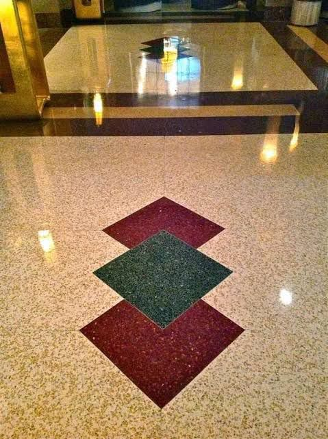
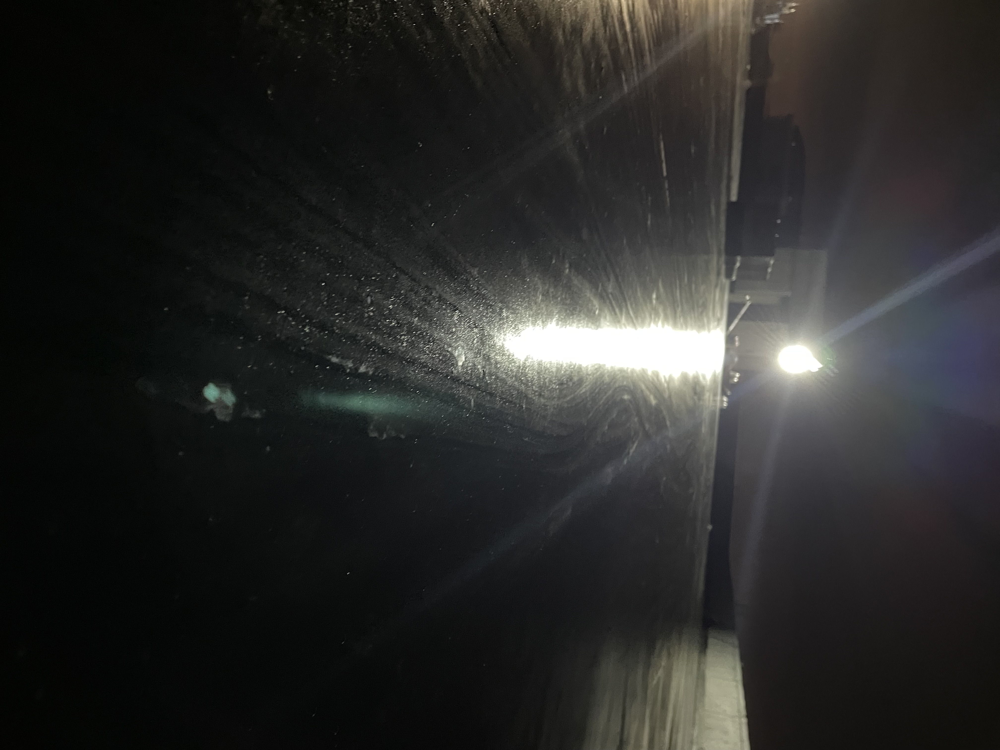
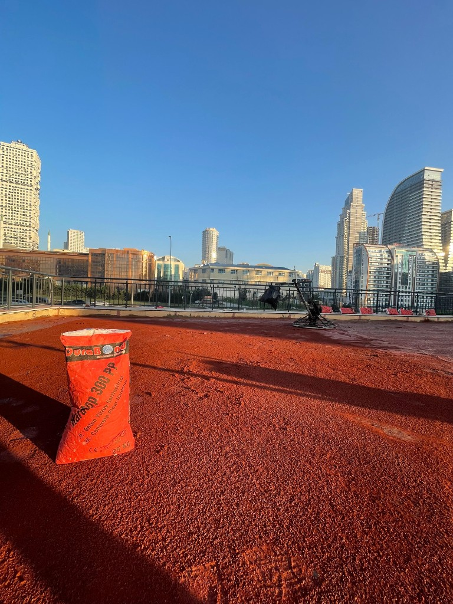
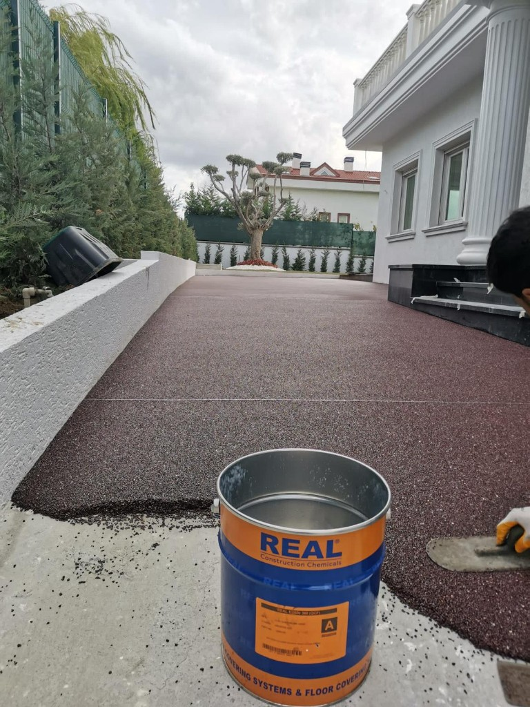

01
Parlak Perdahlı Zemin
Silim ve perdah ile ayna parlaklığında yüzey; tozumaz, yüksek aşınma direncine sahip ultra dayanıklı endüstriyel beton.
Detayları GörModern ekipman, uzman kadro ve kaliteli malzeme ile yurt içi ve yurt dışında prestijli projelere imza atıyoruz. Dayanıklı, estetik ve uzun ömürlü endüstriyel zemin çözümleri.



Yıldırımlar İnşaat olarak, müşteri memnuniyetini ön planda tutan bir anlayışla, inşaat sektöründeki deneyimimizi ve uzman ekibimizi birleştiriyoruz. Yıllar içinde edindiğimiz birikim ve tecrübe ile sizlere kaliteli, güvenilir ve estetik projeler sunmaktan gurur duyuyoruz.
Endüstriyel zemin uygulamalarında kaliteli malzeme, modern araç ve cihazlarla hizmet vermeye devam ediyoruz.
Yaşam alanlarınızı sürdürülebilir, estetik ve fonksiyonel hale getirerek sizlere özel çözümler sunmak.
Yüksek kaliteli inşaat hizmetleriyle güvenilir bir ortak olmak, projelerinizi zamanında tamamlamak.
Parlak perdahlı ve silimli beton, fırçalı zemin, laser screed, terrazzo ve baskı beton, yüzey sertleştirici (kuru sarf), epoksi / dekoratif kaplama, taş halı ve bakım-onarım — 1.568.000 m²'yi aşan tecrübe ile projenize özel çözümler sunuyoruz.

Silim ve perdah ile ayna parlaklığında yüzey; tozumaz, yüksek aşınma direncine sahip ultra dayanıklı endüstriyel beton.
Detayları Gör
Kaymaz, anti-slip yüzey. Yüksek trafikli alanlar, rampalar ve dış mekân endüstriyel zeminler için ideal güvenli çözüm.
Detayları Gör
Lazer kontrollü düz beton altyapı; AVM, hastane ve geniş hacimlerde terrazzo ve düşük toleranslı parlak döşeme ile birlikte anahtar teslim uygulama.
Detayları Gör
Fabrika, depo ve ağır yük dökümleri; mühendislikten uygulamaya anahtar teslim. İstenirse ayrıca baskı beton ve dış mekân desenli yüzeyler.
Detayları Gör
Taze betona kuru sarf (korundum / kuvars) ile aşınma direnci; çatı ve teras dökümlerinde perdah entegrasyonu — detaylar ve vitrin görseli hizmet sayfasında.
Detayları Gör
Erken kesim ve çatlak kontrolü; poliüretan ve epoksi derz dolgu ile sızdırmaz, uzun ömürlü derz hatları.
Detayları Gör
Peyzaj ve villa çevresi için reçine bağlı agregalı taş halı; yaya yolu ve otoparklarda estetik, dayanıklı zemin.
Detayları Gör
Çatlak, aşınma ve hasarlı bölgelerde profesyonel müdahale; mevcut betonu yenileyerek ömrünü uzatıyoruz.
Detayları Gör
Flake, renk geçişi ve özel desenlerle markanıza özel dekoratif epoksi zeminler; vitrin görselleri hizmet sayfasında.
Detayları GörDeneyimli ekibi, kaliteli işçilik anlayışı ve müşteri odaklı hizmetleriyle projelerinizi başarıyla hayata geçiriyoruz.
Müşteri taleplerine hızlı ve esnek bir şekilde adapte olarak, her proje için özel çözümler üretiriz.
Uzman ve deneyimli ekibiyle projelerinizde kaliteli işçilik ve güven sunar.
Şeffaf iletişim ve müşteri memnuniyeti odaklı yaklaşımla güçlü iş ortaklıkları kurarız.
Modern tasarım anlayışı ve kaliteli malzeme kullanımıyla uzun ömürlü projeler.
Türkiye ve yurt dışında onlarca prestijli projede imzamız var. İşte başarıyla tamamladığımız projelerden bazıları.


Her türlü soru, öneri veya geri bildiriminizi bekliyoruz. İlgili departmanlarımız en kısa sürede size dönüş yapacaktır.
Projenizi birlikte hayata geçirmek için bekliyoruz.